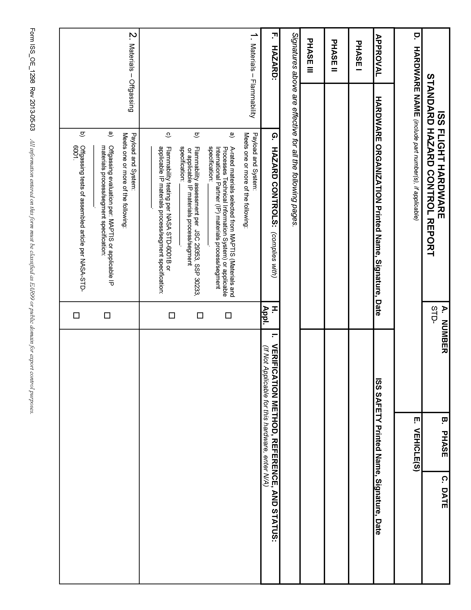
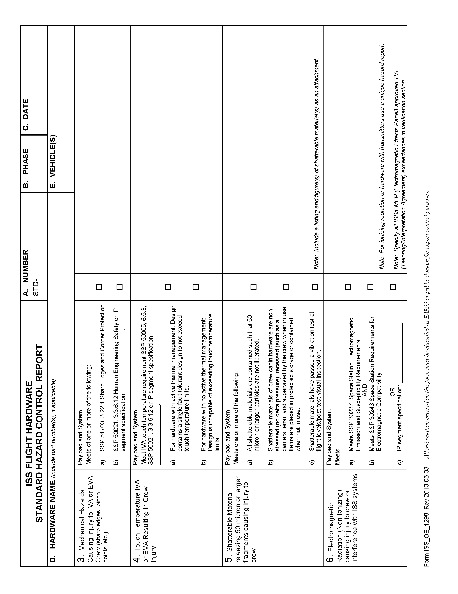
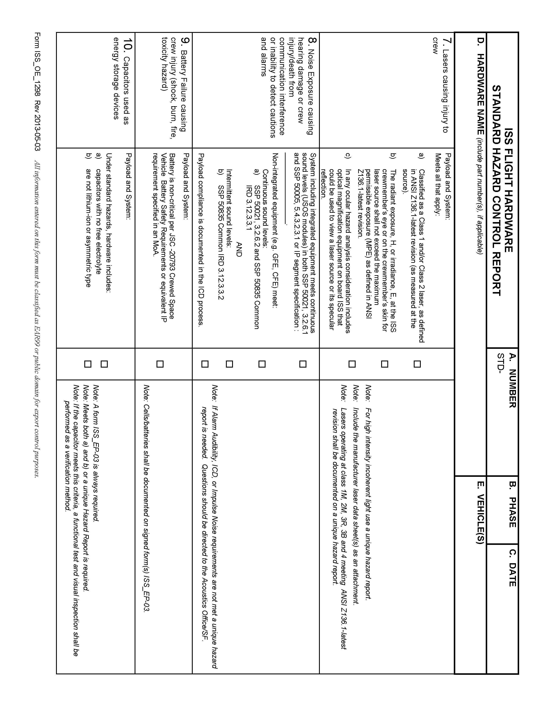
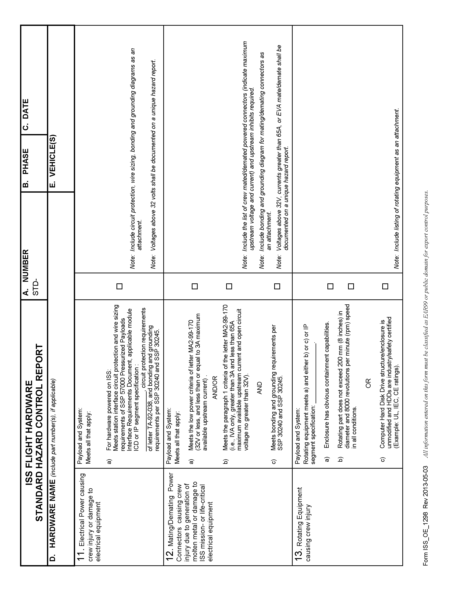
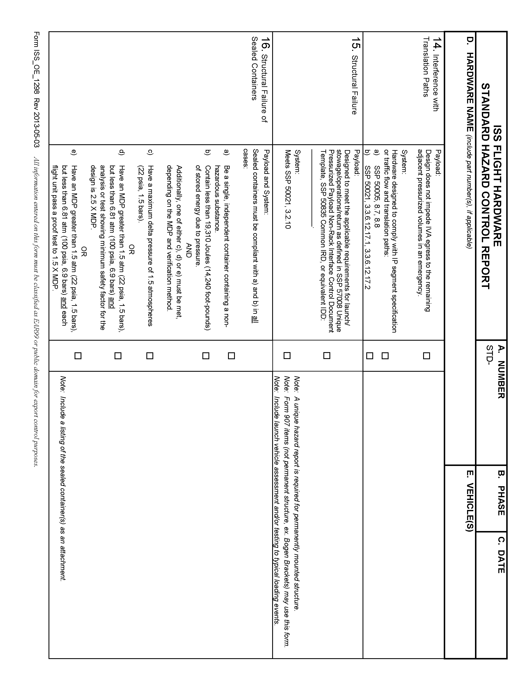
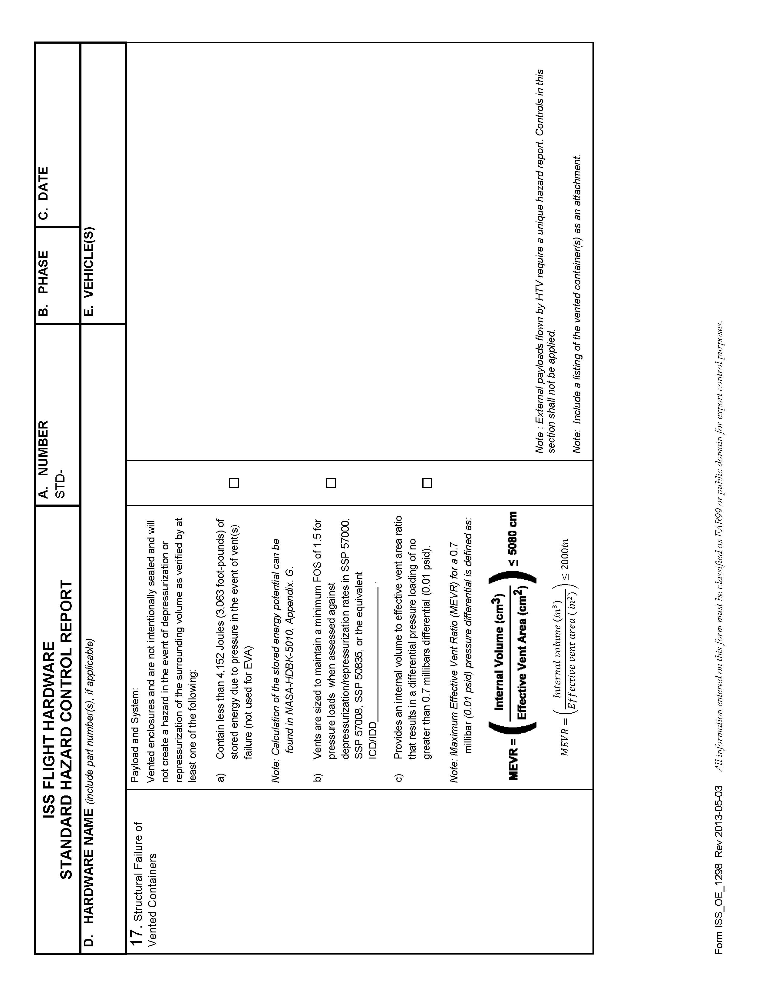

DRD-05.26 - ISS Flight HW Standard Hazard Control Sheet(ISS_OE_1298)
|
| Reference: |
SSP-51700 Baseline-DCN004 |
Payload Safety Policy and Requirements for the International Space Station |
| SSP-30599 |
safety Review Process |
| Purpose: |
The Flight Payload Standardized Hazard Control Report has been developed for payloads with
routine hazards/standard controls/verifications which may be approved by Payload Safety Review Panel
(PSRP) without a formal meeting. No specific HR is required for the standard hazards. Details see
SSP 30599, section 4.5.
|
| Content: |
The report shall show that the standard hazards are controlled and verified in compliance
with the standard design requirements.
|






This form must be signed by the payload organization programme manager before the safety data package
(SDP) is submitted.
(THIS PAGE INTENTIONALLY LEFT BLANK)